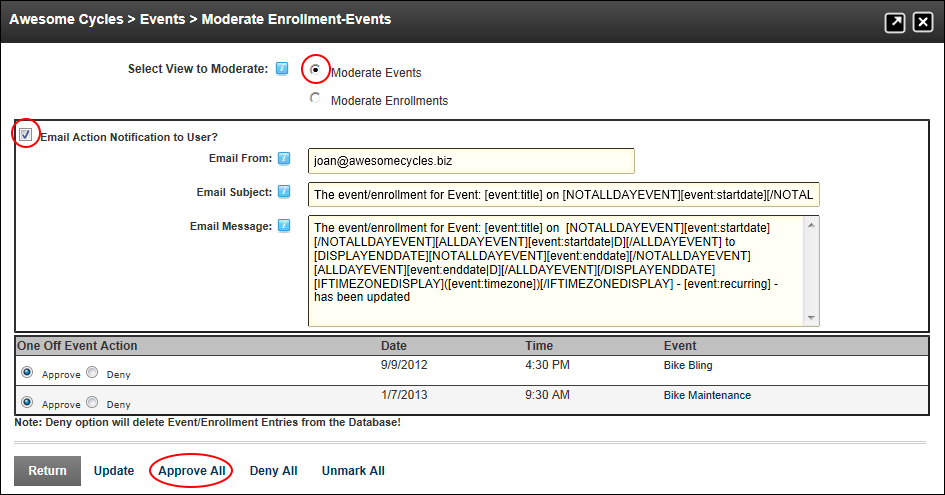

Approving All Moderated Events
How to approve all events awaiting moderation on the Events module.
- Select Moderate Events from the Events module actions menu - OR - Click the Moderate Events button. This opens the Moderate Enrollment-Events page.
- At Select View to Moderate, select Moderate Events. This displays the list of events awaiting moderation.
- At Email Action Notification to User?, select one of these options:
- Mark
 the check box to send email notification to the users who created the events.
the check box to send email notification to the users who created the events.
- In the Email From text box, edit the email address that will be displayed in the From field when the user receives the message. The email address of the logged in moderator will be displayed by default.
- Optional. In the Email Subject text box, edit the subject of the email
- Optional. In the Email Message text box, edit the message of the email.
- Unmark
 the check box if you don't want to send email notifications.
the check box if you don't want to send email notifications.
- Click the Approve All link. This will display the message "Are You Sure You Wish To Update/Delete Item(s) (and send Email) ?"
-
Click the OK button to confirm.

Approving all Moderated Events